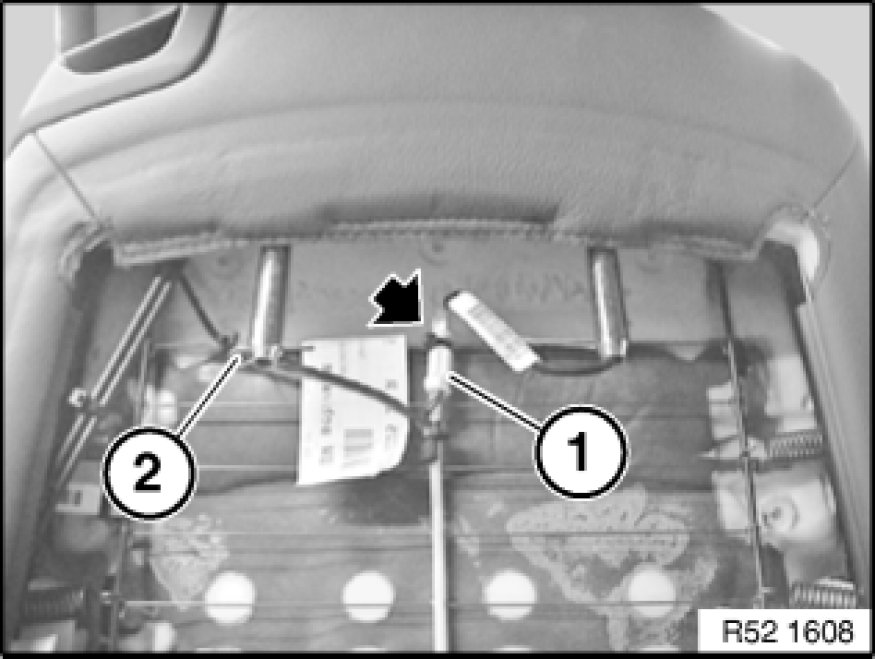
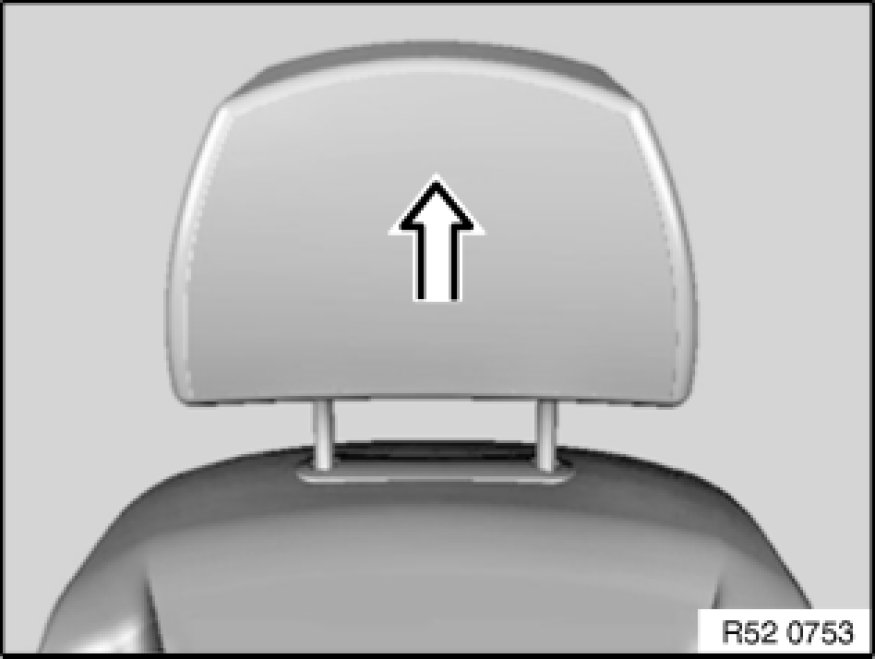

Removing and Installing/Replacing Front Left or Right Crash-Active Head Restraint
52 13 393 - Removing and installing/replacing front left or right crash-active head restraint

Warning!
Read and comply with safety regulations [1][2]Safety Regulations for Handling Components with Gas Generators for handling airbag modules and pyrotechnical belt pretensioners.
Incorrect handling may result in triggering of the crash-active head restraint and thereby cause injury.
Switch off ignition!

Necessary preliminary tasks:
- Clamp off battery negative lead Disconnecting and Connecting Battery Negative Lead
- Remove rear panel Removing and Installing/Replacing Rear Panel on Left or Right Front Seat Backrest (Normal/Electric)

Unfasten plug connection (1) and disconnect.
Pull out split pin (2).
If necessary, cut cable ties.

Lift out head restraint.